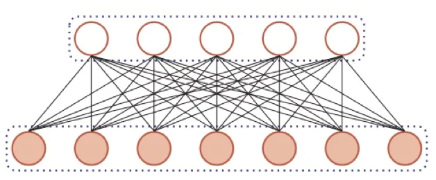

计算机视觉 · 第 7 章 循环神经网络
7.1 为什么需要循环神经网络
从这一节起，课程进入「序列建模」这条线。前面第 5 章的前馈神经网络（Feedforward Neural Network）和第 6 章的卷积神经网络，处理的都是「定长输入、定长输出、样本之间互不影响」的任务；而现实中大量数据是序列——语句、语音、视频，长度可变，前后元素彼此关联。本节先讲清楚前馈网络的两条隐含假设，再用词性分类这个例子说明：为什么序列任务需要一种带记忆的网络。
1. 前馈网络：一个能拟合任意函数的黑盒子
先回顾前馈网络在监督学习里的用法。课件给它的定位很直白：神经网络可以当做能够拟合任意函数的黑盒子——只要训练数据足够，给定特定的输入 X，就能得到希望的输出 Y。全连接网络、卷积网络都是这个思路：把输入送进去，网络逐层做线性变换与非线性激活，最后在输出层给出结果。

这个「黑盒子」的说法很方便，但它藏着一个前提：盒子的进出口尺寸是固定的。一旦输入或输出的维度要随数据变化，这个盒子就没法直接用了。
2. 前馈网络处理不了什么
课件把问题点得很清楚：前馈网络层与层之间存在连接，而每一层内部的节点之间是没有连接的；同时，输入和输出的维度是固定的，不能任意改变。这两句话分别对应两类任务。
第一类问题出在「层内无连接」上。既然同一层内的节点彼此独立，网络的一次前向计算就只看得见当前这一个输入，看不到「上一个输入是什么」。可序列数据的价值恰恰在于顺序：语句里词与词有语法和语义上的搭配，视频里相邻帧的内容是连续的。把序列拆成一个个互不相干的样本来喂给前馈网络，等于把这些关联全部丢掉。
第二类问题出在「维度固定」上。序列的长度天然是变化的：句子可以三个词，也可以三十个词；视频可以是几十帧，也可以是几千帧。而前馈网络的输入层节点数在训练前就定死了，既接不住更长的序列，也无法把不同长度的样本统一起来。
3. 一个例子：词性分类
课件用「词性分类」把上面的道理落到具体任务上。所谓词性分类，就是给句子里的每个词标上词性（名词、动词等）。课件给的例子是句子「我 爱 学习」，三个词依次标注为 /nn、/v、/nn。
这个任务为什么要看上下文？因为一个词该归到哪一类，往往不由它自己决定，而由它周围的词决定。课件给的结论是：一个句子中，前一个单词对当前单词的词性预测有很大影响。同一个词形在不同句子里可以承担不同的词性，只看孤立的一个词，连人也没法判断。
这就把矛盾摆到了台面上：前馈网络每次只接收一个固定维度的输入，既不知道这个词前面出现过什么，也无法把「前一个词的判断结果」带到当前时刻来用。要解决这类问题，网络必须能记住前面处理过的信息，并把这份记忆和当前输入一起参与计算——这正是循环神经网络（Recurrent Neural Network，RNN）的出发点，下一节我们就来看它的结构。
本节小结
- 前馈网络被当作「能够拟合任意函数的黑盒子」：训练数据足够时，给定输入 X 就能得到希望的输出 Y，但它要求输入与输出的维度事先固定。
- 前馈网络的两条隐含假设是「层内节点之间无连接」与「输入输出维度固定」，它们分别对应序列数据的两条性质：元素之间有顺序依赖、序列长度可变。
- 词性分类的例子说明：判断一个词的词性要看它前后的词，同一个词在不同上下文中词性可以不同，孤立地看一个词无法判断。
- 序列任务需要一种带记忆的网络——把上一步的隐状态与当前输入一起参与计算，这就是下一节要讲的循环神经网络。